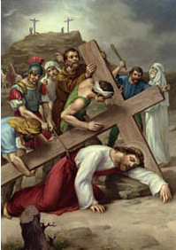

IX. állomás: Jézus harmadszor esik el

Íme, Krisztus újra leroskad a kereszt súlya alatt. A tömeg pedig kíváncsian figyeli, vajon van-e még ereje fölkelni. Szent Pál írja: "isteni mivoltában nem tartotta Istennel való egyenlőségét olyan dolognak, amelyhez mint zsákmányhoz ragaszkodnia kell, hanem kiüresítette önmagát, szolgai alakot vett fel, és hasonló lett az emberekhez, külsejét tekintve úgy jelent meg, mint egy ember. Megalázta magát, engedelmes lett a halálig, mégpedig a kereszthalálig" (Fil 2,6-8). A harmadik esés tulajdonképpen ezt fejezi ki: Isten Fia kiüresedését (kenózis), a kereszt alatti megaláztatását. Jézus megmondta tanítványainak: nem azért jött, hogy neki szolgáljanak, hanem hogy ő szolgáljon (vö. Mt 20,28). Az utolsó vacsora termében egészen a földig hajolt, a lábukat mosva akarta megtanítani őket a megaláztatás szokására. Keresztútján harmadszor a földre esve még hangosabban kiált misztériuma. Halljuk meg hangját! Ez az elítélt, aki a kereszttől roskad le a földre, közel már a kivégzés helyéhez, nekünk mondja: "Én vagyok az út, az igazság és az élet" (Jn 14,6). "Aki engem követ, az nem jár sötétben, hanem övé lesz az élet világossága" (Jn 8,12). Nem csüggeszt el egy olyan elítéltnek a látványa, aki a kereszt alatt zuhan a földre. Ez a halál külső megnyilvánulása, amely közeledik. Magában rejti azonban az élet világosságát.
Urunk, Jézus Krisztus, te a kereszt megaláztatása által nyilvánítod ki a világnak megváltása díját. Add meg a harmadik évezred emberiségének a hit világosságát, hogy benned felismerjék Isten és ember szenvedő szolgáját, legyen bátorságuk ugyanezen az úton követni őt, aki a megaláztatás és a kereszt által vezet el abba az életbe, amelynek nem lesz vége. Neked, Jézus, gyengeségünkben támaszunk, tisztelet és dicsőség mindörökkön örökké. Amen.